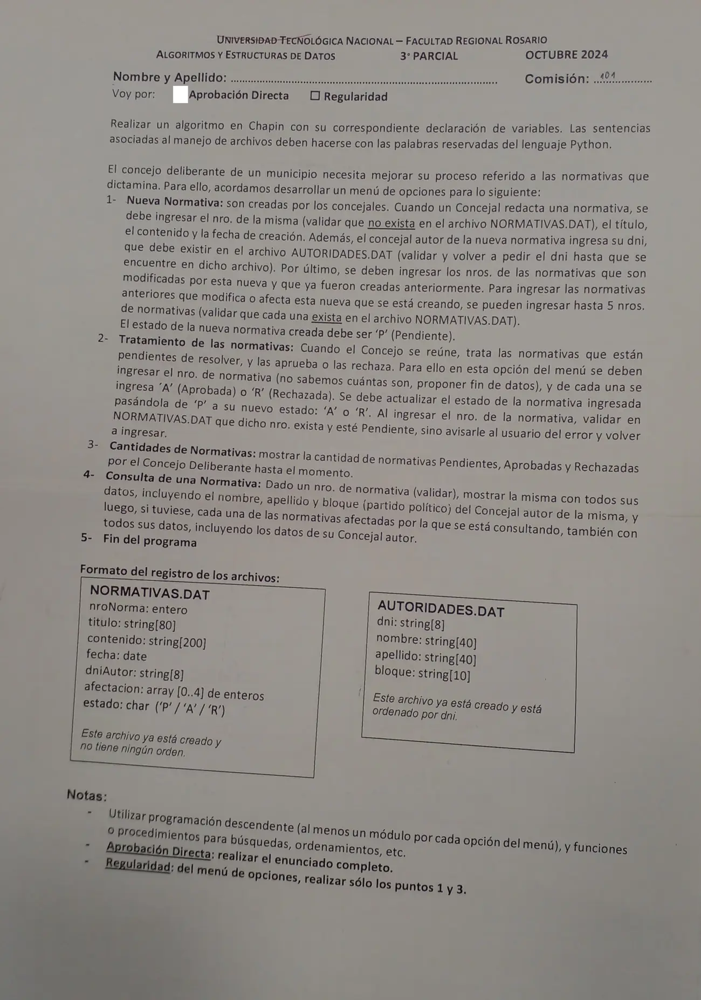

3° parcial, octubre de 2024 (Normativas)
3° parcial y final, 24/10/2024
Enunciado


Propuesta de respuesta
Respuesta no verificada. La propuso Luta Studios con inteligencia artificial y ningún docente la revisó. Puede tener errores.
La hoja pide el diagrama de Chapin. Va un diagrama por módulo, con su declaración de variables arriba, y primero el del programa principal. Si un diagrama no entra en la pantalla, tocalo para verlo completo. Después de los diagramas está el mismo algoritmo en Python, para que lo puedas probar. Las sentencias de archivos van con las palabras reservadas de Python (open, pickle.load, pickle.dump, seek, tell). Los textos se completan con ljust para que los registros midan lo mismo. El tamaño de un registro sale de tell() después de leer el primero.
Menú iterativo
Búsquedas
1- Nueva normativa
2- Tratamiento de las normativas
3- Cantidades de normativas
4- Consulta de una normativa
El mismo algoritmo en Python
Es el programa que se probó, con las mismas sentencias y en el mismo orden que las cajas. Cada Leer del diagrama es un input, convertido a int o float según la declaración, y cada Mostrar es un print.
import os
import pickle
from datetime import date
class Normativa:
def __init__(self):
self.nroNorma = 0
self.titulo = ""
self.contenido = ""
self.fecha = date.today()
self.dniAutor = ""
self.afectacion = [0]*5
self.estado = ""
class Autoridad:
def __init__(self):
self.dni = ""
self.nombre = ""
self.apellido = ""
self.bloque = ""
# afNormativas, afAutoridades: str
# alNormativas, alAutoridades: archivo
# tamAut: int
afNormativas = "NORMATIVAS.DAT"
afAutoridades = "AUTORIDADES.DAT"
alNormativas = open(afNormativas, "r+b")
alAutoridades = open(afAutoridades, "rb")
pickle.load(alAutoridades)
tamAut = alAutoridades.tell()
def BUSCA_NORMA(nro):
# Secuencial: NORMATIVAS.DAT no tiene orden. Devuelve el byte donde empieza o -1
# nro, tam, pos, p: int
# reg: Normativa
tam = os.path.getsize(afNormativas)
pos = -1
alNormativas.seek(0, 0)
while alNormativas.tell() < tam and pos == -1:
p = alNormativas.tell()
reg = pickle.load(alNormativas)
if reg.nroNorma == nro:
pos = p
return pos
def BUSCA_AUTORIDAD(dni):
# Dicotómica: AUTORIDADES.DAT está ordenado por dni
# dni: str
# inicio, fin, medio, pos: int
# reg: Autoridad
inicio = 0
fin = os.path.getsize(afAutoridades) // tamAut - 1
pos = -1
while inicio <= fin and pos == -1:
medio = (inicio + fin) // 2
alAutoridades.seek(medio * tamAut, 0)
reg = pickle.load(alAutoridades)
if reg.dni == dni:
pos = medio
elif dni < reg.dni:
fin = medio - 1
else:
inicio = medio + 1
return pos
def NUEVA_NORMATIVA():
# nro, i, d, m, a: int
# reg: Normativa
reg = Normativa()
reg.nroNorma = int(input("Nro. de normativa: "))
while reg.nroNorma <= 0 or BUSCA_NORMA(reg.nroNorma) != -1:
reg.nroNorma = int(input("Ya existe o no es válido, ingrese otro: "))
reg.titulo = input("Título: ").ljust(80, " ")
reg.contenido = input("Contenido: ").ljust(200, " ")
d = int(input("Día de creación: "))
m = int(input("Mes de creación: "))
a = int(input("Año de creación: "))
reg.fecha = date(a, m, d)
reg.dniAutor = input("DNI del concejal autor: ").ljust(8, " ")
while BUSCA_AUTORIDAD(reg.dniAutor) == -1:
reg.dniAutor = input("No existe ese DNI, ingréselo de nuevo: ").ljust(8, " ")
i = 0
nro = int(input("Nro. de normativa que modifica (0 para terminar): "))
while nro != 0 and i < 5:
if BUSCA_NORMA(nro) == -1:
print("Esa normativa no existe")
else:
reg.afectacion[i] = nro
i = i + 1
if i < 5:
nro = int(input("Nro. de normativa que modifica (0 para terminar): "))
reg.estado = "P"
alNormativas.seek(0, 2)
pickle.dump(reg, alNormativas)
alNormativas.flush()
def TRATAMIENTO():
# nro, pos: int
# reg: Normativa
# Fin de datos: nro 0
nro = int(input("Nro. de normativa (0 para terminar): "))
while nro != 0:
pos = BUSCA_NORMA(nro)
if pos == -1:
print("Esa normativa no existe")
else:
alNormativas.seek(pos, 0)
reg = pickle.load(alNormativas)
if reg.estado != "P":
print("Esa normativa no está pendiente")
else:
reg.estado = input("A (aprobada) o R (rechazada): ")
while reg.estado != "A" and reg.estado != "R":
reg.estado = input("Tiene que ser A o R: ")
alNormativas.seek(pos, 0)
pickle.dump(reg, alNormativas)
alNormativas.flush()
nro = int(input("Nro. de normativa (0 para terminar): "))
def CANTIDADES():
# tam, p, a, r: int
# reg: Normativa
tam = os.path.getsize(afNormativas)
p = 0
a = 0
r = 0
alNormativas.seek(0, 0)
while alNormativas.tell() < tam:
reg = pickle.load(alNormativas)
if reg.estado == "P":
p = p + 1
elif reg.estado == "A":
a = a + 1
else:
r = r + 1
print("Pendientes:", p, "- Aprobadas:", a, "- Rechazadas:", r)
def MOSTRAR(pos):
# pos: int
# reg: Normativa
# aut: Autoridad
alNormativas.seek(pos, 0)
reg = pickle.load(alNormativas)
alAutoridades.seek(BUSCA_AUTORIDAD(reg.dniAutor) * tamAut, 0)
aut = pickle.load(alAutoridades)
print(reg.nroNorma, reg.titulo, reg.contenido, reg.fecha, reg.estado)
print("Autor:", reg.dniAutor, aut.nombre, aut.apellido, aut.bloque)
return reg
def CONSULTA():
# nro, pos, i: int
# reg: Normativa
nro = int(input("Nro. de normativa: "))
pos = BUSCA_NORMA(nro)
while pos == -1:
nro = int(input("No existe, ingrese otro nro.: "))
pos = BUSCA_NORMA(nro)
reg = MOSTRAR(pos)
for i in range(5):
if reg.afectacion[i] != 0:
print("Afecta a:")
MOSTRAR(BUSCA_NORMA(reg.afectacion[i]))
# Programa principal
# opcion: int
opcion = 0
while opcion != 5:
print("1- Nueva normativa")
print("2- Tratamiento de las normativas")
print("3- Cantidades de normativas")
print("4- Consulta de una normativa")
print("5- Fin del programa")
opcion = int(input("Opción: "))
while opcion < 1 or opcion > 5:
opcion = int(input("Opción inválida: "))
match opcion:
case 1:
NUEVA_NORMATIVA()
case 2:
TRATAMIENTO()
case 3:
CANTIDADES()
case 4:
CONSULTA()
alNormativas.close()
alAutoridades.close()Respuesta no verificada. Puede tener errores.
Se armó con la hoja del examen y la página del 3° parcial y final (registros como clase, recorrer, búsquedas, actualizar un registro y alta). Las operaciones de archivos siguen las diapositivas de merge y corte de control. El Chapin sigue la forma de las diapositivas del examen de Historia Clínica de 2019. La hoja pide Python para las sentencias de archivos.
Quedó en duda: La fecha se arma con date a partir del día, el mes y el año que se ingresan. Una fecha imposible da error, y la hoja no pide validarla. Las normativas que modifica se guardan en las primeras posiciones del arreglo y el resto queda en 0. El 0 corta esa carga, y también el tratamiento. En el tratamiento, si el número no existe o no está pendiente, se avisa y se pide otro. La consulta muestra el autor de cada normativa afectada, como pide la hoja. Los textos se completan con los largos de la hoja (80, 200 y 8 caracteres). Las diapositivas de la materia no muestran en Chapin la lectura de datos ni la selección múltiple. Acá van como Leer y como Según, con una columna por caso.
¿Cómo te fue?
Marcá cada tema del examen.
- ArchivosSecuencial y de acceso directo, en 3° parcial y final
- BúsquedaBúsqueda secuencial, en 2° parcial
- RegistrosRegistros, en 3° parcial y final